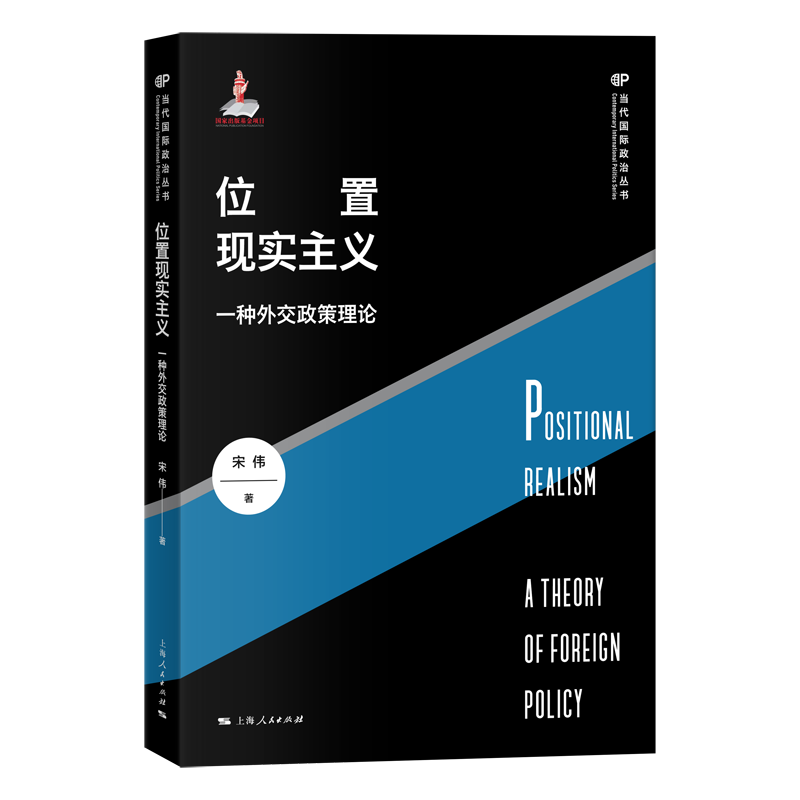
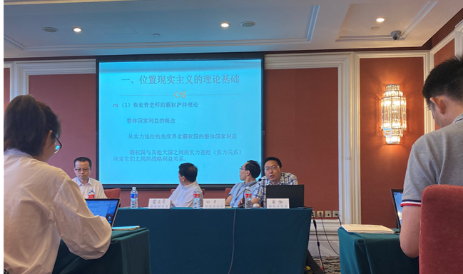
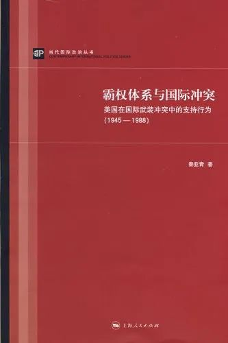

收录于合集

2021年7月6日下午，《位置现实主义：一种外交政策理论》新书讨论会在清华大学主办的第十四届政治学与国际关系共同体年会上举行。《位置现实主义》是中国人民大学国际关系学院宋伟教授的最新理论著作，也是“当代国际政治丛书”改版后推出的前沿作品之一。

位置现实主义：一种外交政策理论
宋伟 著 上海人民出版社2021年5月版
围绕本书，外交学院教授兼山东大学讲席教授 秦亚青 、清华大学 阎学通 教授和 刘丰 教授、中国社会科学院世界经济与政治研究所 杨原 副研究员等就中国学者如何进行理论建构与创新展开了精彩纷呈的讨论。宋伟教授介绍了本书的基本内容，并对评论做了回应。本场讨论会由清华大学国际关系学系黄宇兴副教授主持。

新书介绍：位置决定大国的整体国家利益
在阐述本书的核心内容时，宋伟教授首先指出，本书副标题使用“一种外交政策理论”的说法，旨在说明这一理论只是外交政策理论的一种，并不否定现有外交政策理论的有效性和学术价值。位置现实主义理论的核心观点在于，大国应该从国际体系位置的角度来界定其整体国家利益，首先是准确认识本国所处的国际体系位置，然后合理界定本国应该追求的位置性目标。
**
** 位置现实主义的理论基础主要是秦亚青教授的霸权护持理论和作者之前构建的霸权利益理论。
霸权护持理论提供了整体国家利益的概念和从霸权实力地位（位置性）的角度界定霸权国的整体国家利益的方式，霸权国与其他大国之间的实力差距（实力关系）决定它们之间的战略利益关系。霸权利益理论主要来源于宋伟教授的《捍卫霸权利益：美国地区一体化战略的演变（1945—2005）》一书。该书试图在霸权实力地位和实力关系的基础上考虑霸权秩序地位和秩序关系，实力关系与秩序关系共同决定霸权国与其他大国之间的战略利益关系。

霸权体系与国际冲突：美国在国际武装冲突中的支持行为（1945—1988） 秦亚青 著 上海人民出版社2008年版
位置现实主义采取理性主义的研究路径，理论范式假设包括大国中心主义和国家具有基本的理性。
位置现实主义的核心概念是整体国家利益，即一定时期内国家客观存在的最高利益，这一利益为社会各阶层所共享。假定国家具有整体利益的基本依据在于国家主权体制的存在，国家内部的共性超过国与国之间的共性。
位置现实主义认为，国家在国际体系中的位置可以为界定大国的整体国家利益提供一种合理的研究角度，原因在于
：一方面，位置性目标能够支持和促进具体国家利益；另一方面，大国应该追求怎样的位置性目标，也取决于其自身现有的位置，同时需要考察本国与现存国际秩序的关系。大国具有实力地位和秩序地位两种位置性目标，可以被划分为霸权国、争霸国、潜在争霸国和非争霸国，不同类型的国家具有不同的整体国家利益。
位置现实主义因果机制的核心是整体国家利益塑造大国的对外政策，大国之间的战略利益关系通过国家之间的实力关系和秩序关系来确定，大国据此界定自己的盟友和对手。以这种因果机制为基础，位置现实主义针对上述四类大国的外交政策提出了一系列推论，并以19世纪英、俄、德、美、法、奥匈帝国的外交政策为案例对推论进行了检验。
嘉宾评论：中国学者理论构建与创新的优秀范例
现场评论人都对宋伟教授的学术成果做出了非常积极的评价，肯定了本书为中国国际关系理论创新作出的贡献，并提出了一些有待解决或者澄清的问题。
秦亚青教授高度评价了宋伟教授的研究带来的启发，《位置现实主义》对整体国家利益的界定是最根本的创新，在《捍卫霸权利益》的基础上进行了系统思考，从霸权国的整体利益扩展到大国的整体利益，发展出具有一般意义的外交理论。他认为，在本书的理论发展中，整体国家利益这一核心概念始终很突出。虽然国家分类变多，但是“位置”这一概念始终清晰。此外，本书的理论构建都非常符合科学规范。因此，宋伟教授为中国国际关系学者如何思考并归纳问题、梳理概念、进行理论升华提供了值得学习的范例。
秦亚青教授提出了三个问题。 第一
，位置可能出现不确定性。在位置相当明确的情况下，位置现实主义可以对大国的外交政策作出预测，但在不确定国家位置时，国家的整体利益应该如何确定？实力位置有明确的判断标准，但是秩序关系是主观的、意愿性的，这种意愿性又该如何界定？
第二 ，反例的可能。19世纪之外或欧洲范围之外，国家的实力地位与秩序地位的重要性是否与19世纪欧洲国家的位置性利益同等突出？ 第三，
其他变量的控制问题。如何排除或控制国内政治问题、经济因素、领导人意愿这些变量？如何控制国内政治的非理性因素？只有把这些变量控制好，位置现实主义才能更具有说服力。
刘丰教授认为
，宋伟教授的著作立足于现实主义理论传统，在权力转移理论和结构现实主义基础上发展关于大国外交政策行为的理论，弥补和修正了已有理论的不足，对国际关系理论进行了创新，具体体现在提出整体国家利益的概念，厘清实力关系、秩序关系、利益关系概念的内部逻辑，揭示了主要大国之间根据位置差异产生分化组合的动态关系等方面。在此基础上，刘丰教授提出了可以进一步探讨的问题。第一，本书的定位是规范性还是实证性的？如何平衡理论的应然性与实然性、规范性与解释性？第二，权力的界定本身在现实主义内部存在差异，能否较精确地测量80%的实力门槛？第三，国际体系中的位置具有相对性和社会性，能否完全根据实力来确定四种类型的国家？
杨原副研究员
认为宋伟教授为年轻学者提供了很好的范例，年轻一代应该以秦亚青老师、阎学通老师为榜样，热爱学术，不轻言放弃。结合本书，杨老师提出了两个问题。一是争霸国究竟应该把潜在争霸国作为主要对手还是优先盟友。这里是否存在理论逻辑的不自洽？出现这种不自洽的一个可能原因是没有充分考虑国家之间的互动和均衡，或许可以建立一个四方博弈的模型并求解纳什均衡。二是如何理解国家利益对于国家间合作的影响。传统共识认为利益趋同有利于国家间合作，但在很多情况下，利益趋同是导致国家间冲突的主要原因，利益差异化反而有助于合作。人们之所以会认为存在共同利益有助于合作，可能是将“共同利益”与“共同威胁”相混淆。
阎学通教授
首先对“位置”概念进行了讨论，他认为，作者试图在实力地位与外交政策之间建立一种因果理论关系，具有较强的合理性，但问题在于：首先，一个国家的实力地位影响战略目标，但是地位不决定实现战略目标的方法，不能用战略目标代替战略的全部。其次，实力地位与战略目标之间是实然关系还是应然关系？是实力地位决定必然的战略，还是根据实力定位决定应采取什么战略？理论只能预测实然的关系，不能预测应然的关系。再次，实力地位是否决定某一国家对国际秩序的满意度？地位与国家满意与否没有必然关系。最后，大国竞争对秩序的影响是实力与策略共同导致的结果。阎老师认为，实力地位通过中介变量（策略）对国际秩序产生影响，宋伟教授没有讨论国际规范问题，秩序应该包括有无和特征两个方面，规范决定秩序特征。总的来看，宋伟教授试图在实力地位、国际秩序与外交战略之间建立机制是非常可取的，但是要处理好实力与战略、权力及秩序的关系。
作者回应： 位置现实主义理论 的 解释性和规范性并重
宋伟教授感谢了各位嘉宾的精彩点评，并对以上问题进行了归纳和回应。关于位置模糊的问题，宋伟教授认为，秩序地位的判定具有客观基础，主要考察现有的国际秩序规则是否有利于本国的国际收益分配。秩序地位的界定与领导人的看法有关，追求什么样的秩序地位因此也具有主观性，但也正是这种主观性导致国家对秩序地位的追求可能是理性的，也可能是非理性的。其次，目前还没有发现符合位置现实主义预期但外交政策失败的反例，但是非常期待。最后，宋伟教授认为，位置现实主义理论的解释性和规范性并重。作者提出理性的假设和预期，但是不假定国家一定会追随位置现实主义的指引，因为导致国家外交政策的非理性因素非常多。本书不试图建立具有普遍解释力的理论，该理论只解释理性的外交政策，提出理性的政策建议。相比解释性，位置现实主义更强调应然性，即国家如何能够合理界定本国的整体国家利益，正确地判定本国的盟友与对手。
针对杨原副研究员的问题，宋伟教授指出，从应然的角度，潜在争霸国应该把霸权国作为盟友，把争霸国作为对手，但是在现实中，不是所有潜在争霸国都是霸权国的盟友，争霸国仍有争取其余潜在争霸国的空间。关于利益与合作的问题，作者认为，“共同利益”概念的确具有误导性，本书使用的是“利益的一致性”，两国利益一致性高时比较容易合作，一致性低时不易合作。
针对刘丰教授和阎学通教授的问题，作者认为，其他学者使用的“地位”（status）具有建构主义色彩。本书试图用带有理性主义色彩的位置（position），认为国家具有实力地位和秩序地位这两种基本位置，基于对本国现有位置的准确界定，国家可以去追求合理的位置性目标。虽然秩序地位有一定主观性，国家可能因此选择不合理的位置性目标，但是在理性主义的研究路径中，主观因素对于理论有效性的影响不大。本书主要从国际秩序规则是否有利和决策权的分配两个角度来考虑国家在国际秩序中的位置。外交政策理论解释的对象是战略层面的敌友选择，没有涉及具体的外交手段，例如是以暴力手段还是和平手段去改变国际秩序、支持多边主义还是单边主义。想要制定理性的外交政策，最重要的是分清敌友，宋伟教授以1871年普法战争后法国与英国谋求和解而始终将德国作为主要对手为例进行了说明。战略手段的理论化是位置现实主义目前还没有涉及的问题，这为理论发展留出了空间。
现场听众在认真聆听了宋伟教授和嘉宾的发言后踊跃提问，问题主要有：
第一，参考日俄战争等小范围霸权战争，大国更优先追求和维持全球层面还是地区层面的位置性目标，两者是否存在矛盾？第二，大国对主导地位的追求是否需要考虑时机？第三，如何解决实力地位、秩序地位之间的相互影响问题？
**
**宋伟教授在回应中指出，国家对主导地位的追求，取决于国家目前的类型。对于霸权国、争霸国、潜在争霸国而言，全球层面的主导地位更重要；对于非争霸国，地区层面地位更重要。位置现实主义强调时机的作用，实力达到霸权国的120%后试图主导国际秩序是较好的时机。最后，实力地位会影响秩序地位，随着实力地位的变化，秩序地位的适当调整是自然的。但这两个变量本质上是相互独立的，即实力地位的变化不一定带来秩序地位的变化，更不意味着国家必然追求新的位置性国际秩序目标。
好好学习，天天“在看”